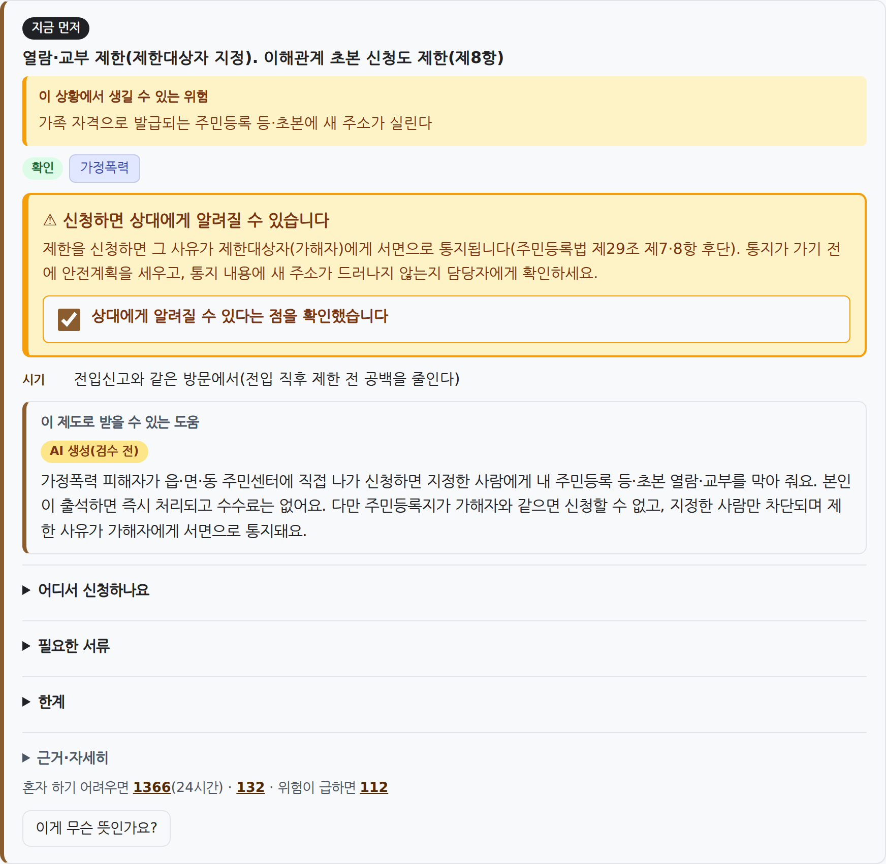
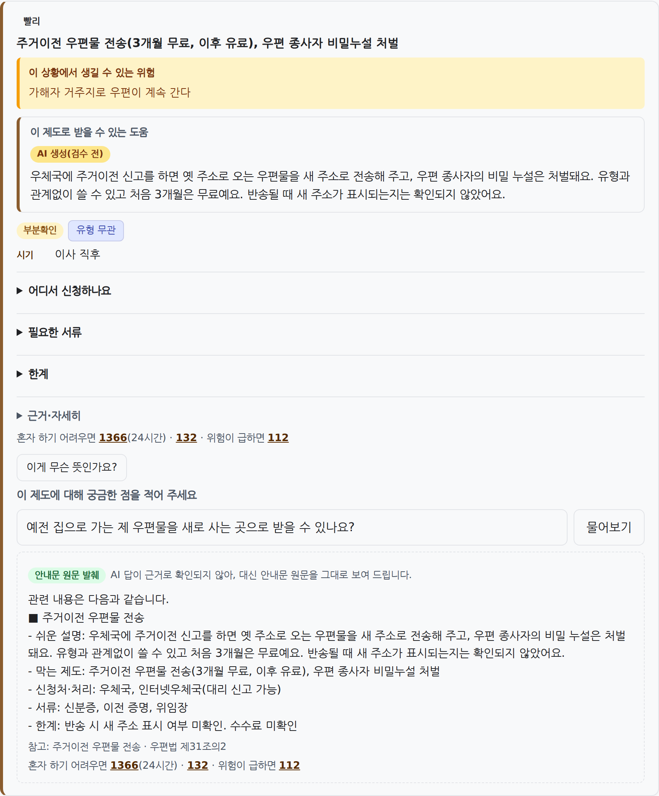
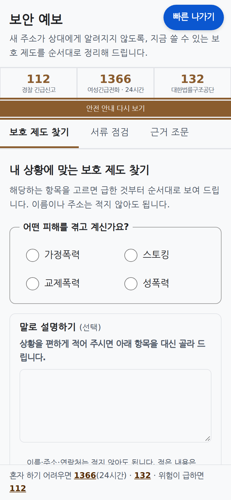
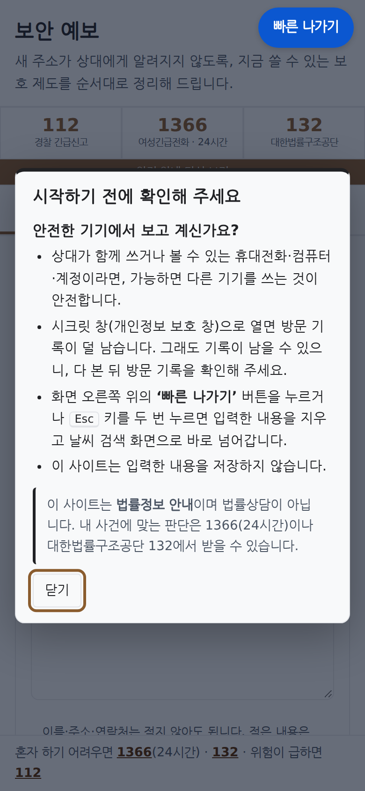

보안 예보
가장 위험한 개인정보, 피해자의 새 주소가 새는
84개 경로를 먼저 진단하는 정보보호 AI
해킹이 아니라 합법적인 행정·사법 절차로 새는 개인정보를 막습니다
EasyPeasy 팀 · 정세영 백엔드·AI · 김시현 기획·법령조사·프런트 · 김대웅 평가·보안·PT
github.com/codyssey-EasyPeasy/boan-yebo
피신해도 새 주소는 해킹이 아니라 소장·결정문·통보서로 샙니다 — 공식 경로 84개 중 16개는 막을 제도조차 없습니다
→ 셋 다 해킹이 아니라 서류로 샜습니다
목표 사용자
| 1차 | 스토킹·가정폭력·교제폭력·성폭력 피해자 본인 — 막 이사했거나 소송 중, 법률 비전문가, 기기를 감시당할 수 있음 |
| 2차 | 대신 찾아봐 주는 가족·지인 |
| 막는 사람 | 남의 위치를 찾으려는 사람 → 거절 + 보호 제도 안내 |
통제가 있어도 기본값은 '노출'
- 신청주의 — 신청해야만 작동, 미리 안내할 의무 없음
- 유형별 공백 — 교부 제한·보호명령은 가정폭력 전용
- 역노출 — 제한을 신청하면 그 사유가 가해자에게 통지
사례: 경인일보·경북매일·YTN 보도 · 신고 통계: 성평등가족부·경찰청 공동 발표(2026-05-18) · 84·16: 자체 법령 조사 지식표(법령 원문 대조) · 상세 출처 docs/SUBMISSION.md ⓐ
이름도 주소도 묻지 않습니다 — 상황만 고르면 새 주소의 유출 경로와 막을 제도를 급한 순서로 보여 줍니다
안전 확인
안전 안내 팝업, 긴급 띠 112·1366·132
감시당하는 기기일 수 있다 → 빠른 나가기
상황 고르기
체크하거나 말로 적기 → AI 가 미리 고름 → 본인 확인
무엇을 말해야 할지 몰랐다 → 상황만 고르면 됨
진단
'지금 먼저 할 일', 카드는 위험 → 도움, 통지 경고
어디서 샐지 몰랐다 → 경로와 순서를 앎
서류 점검
제출할 초안의 위치 단서 표시, 안전한 문장 제안
내 서류가 주소를 흘렸다 → 내기 전에 지움
| 핵심 기능 | 하는 일 | 판단 주체 |
|---|---|---|
| ① 노출 경로 진단 | 피해 유형 4 + 상황 30 → 84개 경로 중 해당하는 것을 급한 순서로 | 결정적 규칙 (의도적: 틀리면 위험한 판단은 AI 배제) |
| ② 막는 제도 안내 | 근거 조문(시행일)·신청처·서류. 통지되는 제도는 확인 체크 뒤에만 신청 방법 | 결정적 규칙 (같은 입력 → 같은 결과) |
| ③ 말로 설명하기 | 자유 서술 → 체크 항목 미리 선택(JSON 스키마) | 자체 호스팅 LLM 제안 → 본인이 확정 |
| ④ 근거 답 | 공개 조문만으로 설명, 문장마다 근거 확인, 실패 시 원문 발췌 | LLM 설명 + 근거 검증 통과분만 |
| ⑤ 서류 점검·다시 쓰기 | 주소·학교·직장·차량·전화 단서(1단계는 브라우저 안에서만) | 규칙 + 개체명 모델 + LLM |
| ⑥ 안전 장치 | 빠른 나가기(버튼·Esc 두 번)·긴급 띠·찾기 질문 거절 + 보호 대안 | 규칙 + 임베딩 신호(2단 가드) |
→ AI 가 틀려도 권할 제도는 바뀌지 않습니다
가장 위험한 순간 — '신청했더니 가해자에게 통지됐다'를 신청 전에 막습니다

① 체크 전 — "신청하면 상대에게 알려질 수 있습니다" 를 확인해야 신청 방법이 열립니다

② 확인 뒤 — 쉬운 설명·신청처가 열림. 통지를 알고, 신청 전에 안전계획을 세웁니다

진단 '지금 먼저 할 일' — 무엇부터 할지 급한 순서로

서류 점검 내 서류 속 주소·전화 단서를 색칠

다시 쓰기 단서를 지운 문장 제안 — 'AI 생성' 표시, 본인이 확인
AI 는 판단하지 않습니다 — 제도는 규칙이 정하고, AI 문장은 근거 검증을 통과해야 나가며, 피해자의 글은 우리 GPU 밖으로 나가지 않습니다
저장 0
찾기 질문 거절
bge-m3
AI 없음 · 결정적
프롬프트는 자체
→ 원문 발췌 재순위기
인용 차단
직접 설계·구현 공개 모델 그대로(미세조정 없음) 런타임 외부 AI 호출 0 · NVIDIA L4 1장 자체 호스팅
위협 모델 — 도구 자신이 새 유출 경로가 되지 않게
| 위협 | 막는 장치 |
|---|---|
| ① 가해자가 피해자 위치를 찾으려 도구를 씀 | 2단 가드, 막는 법만 출력, 서비스에 개인 위치 데이터 0 |
| ② 가해자가 피해자 기기를 감시 | 입력 저장 0·쿠키·localStorage 0, 빠른 나가기(Esc 두 번) |
| ③ 서류 속 지시문(간접 주입) | 지시문 제거·JSON 스키마 강제·출력 가드 |
| ④ 진술이 외부로 반출됨 | 외부 AI 호출 0, 실행 중 모델 허브 오프라인, 로그엔 입력 없음 |
공개 모델 4종 — 맡은 일 | 우리가 만든 부분
| bge-m3 | 조문 검색·가드 신호 | 신호 하나로만 쓰는 판정 규칙 |
| bge-reranker | 재순위·근거 확인 | 문장별 근거 판정 루프 |
| GLiNER | 서류 단서(백본 mDeBERTa) | 라벨 정의·긴 문서 조각 병합·정규식 결합 |
| Qwen3-8B-AWQ | 설명·상황 정리·다시 쓰기 | 프롬프트·검증·재생성·발췌 전부 |
우리가 만든 것은 검증 장치입니다 — 그 장치가 우리 기능 하나를 출시에서 막았습니다
설계 결정 4개와 실측 근거
권고는 LLM 이 아니라 규칙이 정합니다. 결정적, 0.005초, 같은 입력엔 같은 결과
품질 게이트 0.90. '검색 답 종합'은 보류 세트 0.625로 미달 → 출시 안 함. 1~3라운드 모두 기준 미달
가드를 앱과 GPU 로 나눴습니다. GPU 가 없어도 1단 규칙 가드는 계속 동작
작은 이득도 그대로 공개합니다. 재순위기 이득은 R@5 0.945 → 0.964, 1문항
개발에 쓴 AI(서비스엔 없음): Claude Code 코딩·조사·문서 보조(폭넓게) · DeepSeek 설명 초안 42/84 · GLM 평가 역할극. 쉬운 말 설명 사람 검수 0/84 → 화면에 'AI 생성(검수 전)'
모든 수치는 합성 데이터 기준입니다
통과한 레드팀 응답은 공개 조문이나 '찾지 못함'뿐 — 서비스에 개인 위치 데이터가 없습니다. 대책 전후는 같은 세트라 개선을 주장하지 않습니다. 남은 약점: 자기 보호 질문 오거절(다턴 18/225 응답). 자동 시험 앱 598 · GPU 188 통과
GPU 한 장(L4) 안에서 모든 AI 가 돕니다 — 외부 AI 로 나가는 연결 0, GPU 가 없어도 핵심 진단은 돕니다
GPU 메모리 19,648 / 23,034 MiB
보안 설정 4줄
- 앱·vLLM 은 127.0.0.1 에만 바인드, 접근은 SSL-VPN → ssh 터널(시연용)
- GPU 추론 API 공유 토큰: 없거나 틀리면 401, 토큰 로그 출현 0건
- 입력 저장 0: DB 없음, 표지 문자열 60회 전송 뒤 로그 0건
- 실행 중 모델 허브 오프라인, 의존성 알려진 취약점 0건(OSV, 6개 패키지)
| 계층 | 기술 · 버전 (전체는 uv.lock · ⓕ) |
|---|---|
| 언어 | Python 3.12.3 · JavaScript(프레임워크 없음) |
| API | FastAPI 0.162.0 · Uvicorn 0.54.0 · Pydantic 2.14.2 |
| 모델 실행 | PyTorch 2.15.0 · sentence-transformers 6.2.0 · GLiNER 0.2.29 |
| LLM 서빙 | vLLM 0.32.0 — JSON 스키마 강제, 요청 로그 끔 |
| 시험·개발 | uv · pytest 9.2.0 · Playwright · Node.js 22 · Ubuntu 24.04 · Claude Code(개발 보조) |
| 실행 | 셸 스크립트 + PID 파일(Docker 안 씀) |
조사한 사람이 경로를 정하고, 만든 사람이 엔진을, 검증한 사람이 안전을 책임졌습니다
84경로·16 공백
팀 공유 계약
검증 루프·L4 서빙
레드팀 세트 112건
→ 재측정
cf8d149→cacc901정세영 백엔드 및 AI
운영·추론 API, 규칙 엔진, 2단 가드, 생성→검증→재생성→발췌 루프, Qwen3-8B·vLLM 서빙, NCP 2대 배포·GPU 토큰
L4 1장에 모델 4종 · 19,648/23,034MiB
담당 산출물 1664b20 0b21e23 da3e675 642e5e1 · PR #3 → main 993db4f
김시현 기획·법령조사·프런트
문제 정의·목표 사용자, 노출 경로 법령 조사, 지식표 기획, 사용자 흐름·통지 확인 잠금, 화면 개선(PR #2)
84경로 · 막을 제도 없음 16
담당 산출물 d677ea0 a9028c5 · PR #2 34edc21 83c3f63 b8f6631 ac7520e 5085bcb
김대웅 평가·보안·PT
합성 평가 세트·하네스, 다턴 시뮬레이터, 레드팀·가드 평가, 시험 계획·결과, 발표 자료
레드팀 3/84(검색·답 경로) · 조회 방법 출력 0
담당 산출물 fbf4d15 38a14c1 efb3fee 23a03c7 · PR #4 e2b7b93 6b354a2 ef5ddf0 f6ccc4f
※ 커밋은 공용 개발 환경(정세영 계정)에서 함께 했습니다. 팀원 개인 계정 기여는 PR #2(김시현)·PR #4(김대웅)입니다. 위 해시는 각자 맡은 산출물입니다.
브랜치
main 통합·배포 · feature/frontend 화면 · docs-v2 문서 · 검색 답 종합 실험(로컬, 게이트 미달로 미병합)
PR 로만 main 에
main 최신본 합치기 → 시험 통과 → PR. PR #2 화면 → docs-v2 통합 → PR #3 로 main 병합·배포
계약은 시험으로
API 계약을 tests/ 로 고정, GPU 없이 화면을 띄우는 모의 GPU 서버(f2c382f)
수치는 한 곳에서
모든 숫자의 기준 docs/EVIDENCE.md → 덱·제출 문서·README 가 같은 값
c71b229 기준) · 2026-10-31 11:04 → 11-01 06:03 · AI 도구가 맡은 부분은 ⓒ·ⓕ 에 따로 적음7쪽 · ⓔ공개 모델·오픈소스는 그대로 쓰고 모두 밝힙니다 — 상용 AI 는 개발 보조에만, 서비스 실행 중 호출 0
| 구분 | 명칭 | 용도 | 라이선스 |
|---|---|---|---|
| 오픈소스 | BAAI/bge-m3 | 임베딩·의도 분류 | MIT |
| BAAI/bge-reranker-v2-m3 | 재순위·답변 검증 | Apache-2.0 | |
| urchade/gliner_multi-v2.1 | 서류 위치 단서 개체명 인식 | Apache-2.0 | |
| microsoft/mdeberta-v3-base | GLiNER 백본·토크나이저 | MIT | |
| Qwen/Qwen3-8B-AWQ | 내부 LLM(미세조정 없음) | Apache-2.0 | |
| vLLM 0.32.0 | LLM 서빙 | Apache-2.0 * | |
| PyTorch 2.15.0 | 모델 실행 | BSD-3 계열 | |
| transformers 5.16.1 | 모델 실행(의존) | Apache-2.0 | |
| sentence-transformers 6.2.0 | 임베딩·재순위 추론 | Apache-2.0 | |
| FlagEmbedding 1.4.2 | GPU 서버 의존성 | MIT | |
| GLiNER 라이브러리 0.2.29 | 개체명 인식 추론 | Apache-2.0 | |
| FastAPI 0.162.0 · Starlette 1.10.0 | 운영·추론 API | MIT · BSD-3 | |
| Uvicorn 0.54.0 | ASGI 서버 | BSD-3 | |
| Pydantic 2.14.2 | 요청·응답 검증 | MIT | |
| HTTPX 0.28.1 | API 간 호출 | BSD-3 | |
| NumPy 2.5.4 | 점수 계산 | BSD-3 | |
| uv 0.12.7 | 패키지 관리 | MIT/Apache-2.0 * | |
| pytest 9.2.0 | 자동 시험 | MIT | |
| Playwright (Chromium) | 시험·캡처, 시연 녹화(playwright-core 1.63.0) | Apache-2.0 | |
| FFmpeg 7.0.2 (imageio-ffmpeg 0.7.0) | 시연 영상 MP4 변환(개발) | BSD-2 · 바이너리 GPL-3.0 | |
| Node.js 22 | 탐지기 평가(개발) | MIT * |
| 구분 | 명칭 | 용도 | 라이선스 |
|---|---|---|---|
| 외부 API | Anthropic Claude (Claude Code) | 개발 보조: 코드·조사·문서 작성, 평가·레드팀 결과 검토. 서비스 실행 중 호출 없음 | 상용 |
| DeepSeek-V4.1-Flash (래블업 토큰 팩토리) | 쉬운 말 설명 초안 42건·1차 코드 일부. 서비스 실행 중 호출 없음 | 상용 API (래블업 토큰 팩토리) | |
| GLM-5.3-Flash (래블업 토큰 팩토리) | 평가 시뮬레이터의 가상 사용자·공격자. 서비스 실행 중 호출 없음 | 상용 API (래블업 토큰 팩토리) | |
| 사전 보유 코드 | 해당 없음 | 주제 공개(10-30) 뒤 새 저장소. 첫 커밋 d677ea0 2026-10-31 11:04 | 해당 없음 |
| 기타 | 법제처 국가법령정보센터 법령 원문 | 조문 175건 스냅샷, 근거 표시·검색 | 공공저작물(저작권법 제7조) |
| NAVER Cloud Platform 공공기관용 서버 · L4 · SSL-VPN | 배포·시연(주최 측 제공) | 대회 제공 조건 | |
| Hugging Face Hub | 모델 배포처(설치 때만) | 각 모델 라이선스 | |
| Pretendard 글꼴 | 발표 자료 | SIL OFL 1.1 | |
| Noto Sans KR 글꼴 (Google Fonts) | 제출 PDF 원문자 대체 글꼴 | SIL OFL 1.1 | |
| 나눔고딕 글꼴 | 화면 캡처 | SIL OFL 1.1 | |
| 서비스 파비콘 | 브라우저 탭 아이콘 | 팀 자체 제작(김시현), MIT | |
| GitHub | 소스 공개·협업 | GitHub 이용약관 | |
| 공식 기관 페이지·언론 보도 | 법령 조사·문제 근거 | 인용·출처 표시 | |
| 개인 보유 개발 도구 (LLM 호출 중계 등) | 개발 중 외부 API 호출용. 저장소 코드에 미포함 | 해당 없음 |
실행 중 외부로 나가는 것: 빠른 나가기의 검색 이동, 112·1366·132 전화 링크뿐 · 버전은 uv.lock·배포 서버 실측, 라이선스는 THIRD_PARTY_NOTICES.md·패키지 메타데이터 대조(* 공개 저장소 표기)
몰라서·늦어서·순서를 틀려서 새는 주소 — 피해자는 놓친 제도를, 상담 현장은 첫 상담 점검표를, 정책은 막을 수 없는 16개 경로를 얻습니다
고름
통지 위험을 앎
비공개 신청
검증 예정
피해자
흩어진 제도를 급한 순서로 한 화면에. 통지 경고로 역노출을 미리 앎. 서류의 위치 단서를 스스로 지움
상담 현장
인쇄한 결과를 1366·132 상담에 가져가 이어감 — 첫 상담 점검표로 쓰임
정책
막을 제도가 없는 16개 경로를 근거와 함께 드러냄. 법이 바뀌면 지식표 행만 고침
지금 바로 적용할 수 있는 근거 (배포본 실측, 합성 부하)
무료 법률정보 안내(법률상담 아님) · AI 문장엔 'AI 생성' 표시(인공지능기본법 제31조) · 위치 권한 요청 없음
아직 증명 안 된 것 → 다음 게이트
- 사람 검수 0/84 → 84/84
- 레드팀 3.6%(3/84) → 확대 세트로 재측정
- 공개 전 TLS·인증·접근 범위·속도 제한
실제 이용자 효과는 미검증(합성 평가만). 상세 한계는 저장소에 공개
해외도 한 번에 다 막지 못합니다 — 그래서 경로별 진단, 다음 1년은 사람 검수와 상담 현장 시범으로 증명하겠습니다
| 단계 | 할 일(산출물) | 담당(안) | 성공 지표 (기준선 실측 → 목표) |
|---|---|---|---|
| 단기 ~3개월 | 쉬운 말 설명 84행 전문가 검수 | 김시현 | 검수 0/84 → 84/84 |
| 레드팀 확대 세트(사칭·이주민 언어·적응형), 판정자 분리 | 김대웅 | 3.6%(3/84) 재측정 · 조회 방법 출력 0 유지 | |
| 공개 전 보안: TLS·인증·속도 제한·접근 범위, 가드 장애 시 막는 쪽 동작 | 정세영 | 공개 전 점검 항목 전부 완료 | |
| 중기 ~1년 | 스토킹 피해자보호명령(2027-04-22 시행) 반영, 법령 갱신 = 지식표 행 단위 | 김시현 | 시행일 전 반영 |
| 상담 현장 시범 1곳 — 운영 주체 후보 1366·상담소(협력은 제안 단계) | 팀 전체 | 시범 기관 ≥1 · 놓친 제도 수 사전·사후 비교 | |
| 근거 답을 사람 라벨로 재확인 | 김대웅 | 0.956 재확인 | |
| 장기 1년+ | 기기 안 추론(진단·단서 탐지·1차 가드) | 정세영 | 서버 전송 = 조문 검색 질의만 |
| 기관 발송 전 서류 점검, 84경로 분류체계 공개 | 팀 전체 | 협력 기관 수 · 정책 제안서 1건 | |
| 두 번째 보안 주제 '명의 예보'(계획): 유출 통지 뒤 내 이름으로 휴대폰·계좌·대출이 열리는 경로 진단 → 가입제한·안심차단 안내. 같은 엔진, 지식표 약 30행 추가 | 팀 전체 | 보안 예보 = 주소 예보 + 명의 예보 · 선행 조문 확인 3건 |
| 해외 유형 | 대표 사례 | 한국 |
|---|---|---|
| 대체주소 | 미국 대부분 주(ACP) | 없음 |
| 등록부 차단 | 일본(스토커 포함)·독일·스웨덴 | 가정폭력만 |
| 절차별 비공개 | 일본 소송 비닉·영국 선거인 익명 | 신청해야만 |
| 기술 안전 도구 | Cornell CETA·영국 Bright Sky | 경로 진단 도구 못 찾음 |
정책 제안: 교부 제한을 스토킹·교제폭력까지 · 한 번의 제한 결정을 다른 절차에 재사용 · 빈 16경로 입법
피신한 곳은, 피신한 곳으로 남아야 합니다.
모든 수치는 합성 데이터 기준 · 법률정보 안내이며 법률상담이 아닙니다 · 긴급 112 · 상담 1366 · 132서류 단서 탐지와 자유 서술 이해 (합성 데이터 기준)

탐지 F1 0.682 → 0.748 → 0.823 (P 0.932, R 0.737). 생활권·직장 단서는 아직 약함

말로 설명하기 flag F1 0.791, 단일 턴 피해 유형 0.95 · 다턴 단독 0.575
찾기 질문 거절과 정상 질문 오거절 (합성 데이터 기준)

레드팀 차트는 10-31 판정기 집계(3/112). 정의대로 다시 세면 5/112 = 4.5%, 현재 배포본은 검색·답 경로 3/84. 같은 세트라 개선 주장 안 함. 조회 방법 출력 0건(정규식 검출). 공격 문장은 싣지 않음

다턴 시뮬 정상 사용자 오거절 대책 전후. 남은 오거절 18건/14대화는 과제로 둠
답의 종류: 생성 → 검증 → 재생성 → 발췌

45문항 정답 0.956, 근거 없는 문장 3.6% → 0. 같은 검증기로 다시 잰 값이라 독립 판정이 아님

발췌 답: 검증을 못 넘기면 조문 원문으로 답함
통지 확인 뒤 화면, 잔여 위험, 모바일과 빠른 나가기
통지 확인 뒤 신청 방법이 열림

잔여 위험 막을 제도가 없는 경로 안내

모바일 긴급 연락처 띠

안전 안내 방문마다, 빠른 나가기 버튼·Esc 두 번